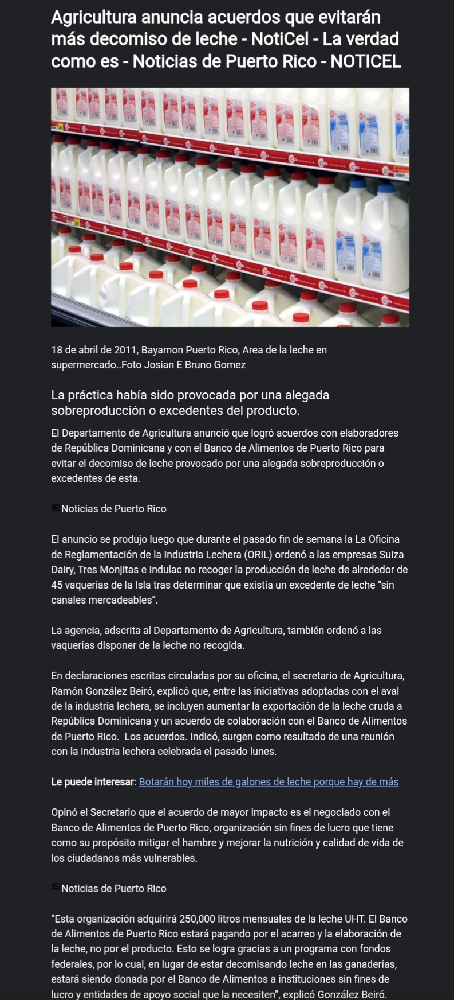

PR campaign
Puerto Rican Down Syndrome Foundation
Coordinated strategic public presence on WAPA TV / Pégate for the World Down Syndrome Day campaign, driving awareness and fundraising via ATH Móvil.